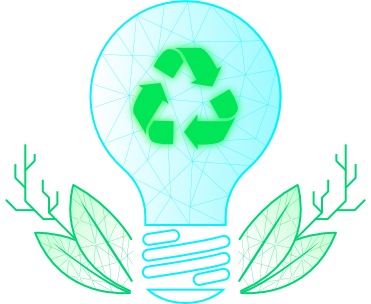

Main Sections

opportunities
consulting
Insights

Innovation Insights

Biomass Residue Intelligence

At BioBiz, we are keen to capitalize on India's rich biodiversity and the availability of large amounts of biomass residues to develop a sustainable bio-economy and attractive business opportunities for diverse stakeholders - farmers, rural stakeholders, end-use industries, entrepreneurs / startups, and financial investors. As part of a leading climate tech consulting firm, we will provide critical assistance with market intelligence, data-driven analyses, professional networking, and opportunities for relevant stakeholders to get effective visibility.
opportunities
consulting
Insights
Innovation Insights
Biomass Residue Intelligence